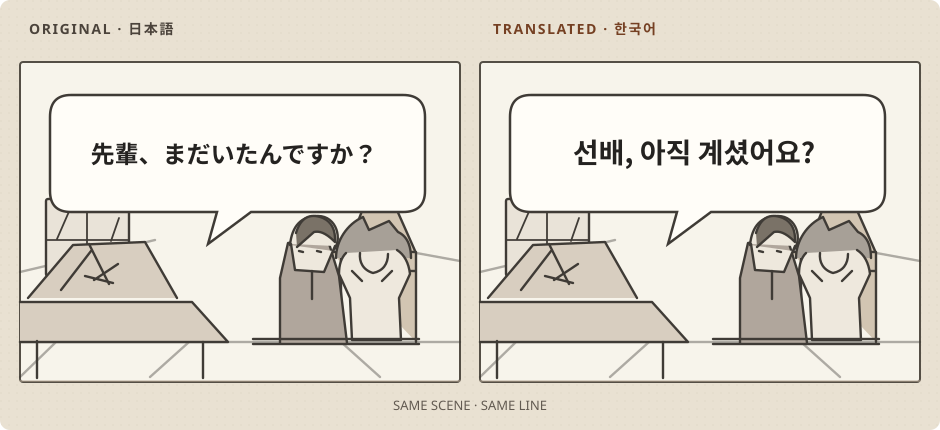

원본과 번역본 비교
같은 쪽의 대사와 글자 크기를 대조할 수 있습니다. 작은 글씨나 효과음은 번역되지 않을 수 있으니 결과를 확인하세요.
내 서버에서 만화 번역 서버 v0.5.0
원고를 올리면 서버가 일본어 글자를 지우고 번역한 한국어를 이미지에 넣습니다. 웹에서 읽는 만화는 Chrome 확장 프로그램으로 현재 페이지에서 번역할 수 있습니다.
Linux 소스 설치입니다. GPU 엔진·모델과 LLM 제공자(또는 실행 중인 로컬 LLM)는 따로 준비해야 합니다. 메모리 권장 사양

01 / 원고 업로드
이미지 여러 장이나 ZIP/CBZ, PDF를 올릴 수 있습니다. 서버는 작업을 순서대로 처리하고, 웹 화면에서 진행 상황과 로그를 확인할 수 있습니다. 번역을 마치면 같은 쪽의 원본과 결과를 비교한 뒤 ZIP/CBZ로 내려받으세요.
첫 번역 안내 읽기같은 쪽의 대사와 글자 크기를 대조할 수 있습니다. 작은 글씨나 효과음은 번역되지 않을 수 있으니 결과를 확인하세요.
파일 번역에는 Koharu와 MangaTranslator 중 하나를 선택합니다. LLM은 별도로 실행 중인 로컬 OpenAI 호환 서버나 지원하는 외부 제공자에 연결합니다.
실패하거나 끝나지 않은 쪽만 다시 처리할 수 있습니다. 엔진과 옵션이 같다면 저장된 전처리 결과를 이용해 다른 LLM으로 재번역할 수도 있습니다.
02 / 웹페이지에서 읽기
별도 저장소의 comic-translator-extension을 설치하면 웹페이지의 만화 이미지를 내 서버로 보내고, 받은 번역 PNG를 원본 자리에 표시합니다. 실시간 번역에는 Koharu 엔진을 사용합니다.
서버를 설치하고 웹 UI의 모델 준비에서 Koharu 모델을 준비하세요. LLM 제공자도 연결해야 합니다.
확장 프로그램 릴리즈 ZIP의 압축을 풉니다. Chrome 120 이상에서 chrome://extensions → 개발자 모드 → 압축해제된 확장 프로그램 로드를 눌러 폴더를 선택하세요.
확장 팝업의 설정 열기에서 서버 주소를 입력하고 페어링 요청을 누릅니다. 서버 웹 UI의 확장 프로그램 → 연결 요청에서 코드를 대조한 뒤 5분 안에 승인하세요. 비밀번호 없는 로컬 서버는 페어링 대신 연결 테스트만 하면 됩니다.
서버가 제공하는 목록에서 번역 제공자·모델·추론 수준을 고르고 설정 저장을 누릅니다. 지원하지 않는 추론 수준은 목록에 표시되지 않습니다.
한 장만 번역하려면 이미지에서 오른쪽 클릭 → 이 이미지 번역을 선택하세요. 지금 보는 사이트를 번역하려면 팝업의 이 사이트 번역을 켭니다. 원본 보기 / 번역 보기로 화면 표시를 바꿀 수 있습니다.
서버가 다른 컴퓨터에 있다면 그 컴퓨터의 LAN IP와 실제 포트를 입력하세요. 기본 설치 주소 127.0.0.1:8710은 서버 컴퓨터에서만 접속됩니다. LAN 설치 안내에 따라 접속 주소와 로그인 비밀번호를 설정해야 합니다.
03 / 시작하기
Python 3.12 이상과 uv, 엔진별 의존성이 필요합니다. 설치기는 사용자 서비스를 만들지만 기본값으로 시작하거나 자동 시작을 켜지 않습니다. 소스 패키지에는 모델·폰트·GPU 엔진이 들어 있지 않습니다.
준비물과 설치 옵션 확인로컬 설치 · 기본 127.0.0.1:8710
git clone https://github.com/furyheimdall/comic-translator.git
cd comic-translator
python3 scripts/install.py --engine koharu
systemctl --user start comic-translator서버 웹 UI에서 모델을 준비하고 LLM 제공자를 연결한 뒤 원고를 올리세요. 다른 기기에서 접속하려면 로그인 비밀번호를 설정해 LAN에 공개해야 합니다.
메모리 사양
표의 최소치는 설치기가 확인하는 현재 가용량입니다. 권장치는 기본 모델을 쓸 때 여유를 두고 잡은 계획값입니다. 모든 GPU와 모델에서 번역이 된다는 보증은 아닙니다.
| GPU 메모리 | 엔진 | 설치 최소 여유 | 권장 확보 여유 |
|---|---|---|---|
| 전용 VRAM | Koharu | 8 | 16 |
| 전용 VRAM | MT / 둘 다 | 16 | 24 |
| GB10·GH200 통합메모리 | Koharu | 12 | 24 |
| GB10·GH200 통합메모리 | MT / 둘 다 | 24 | 32 |
MT는 MangaTranslator의 약자입니다. 전용 GPU는 한 장의 남은 VRAM을 확인하고, GB10·GH200은 CPU와 GPU가 공유하는 시스템 메모리의 MemAvailable을 확인합니다. 여러 GPU의 VRAM을 합치거나 전용 VRAM에 시스템 RAM을 더할 수는 없습니다. 로컬 LLM이나 추가 FLUX 모델을 함께 실행한다면 그 메모리도 확보해야 합니다.
실제 운영 서버. 128 GB 통합메모리의 DGX Spark(GB10)에서 Koharu 작업이 끝났을 때 가용 메모리가 약 10 GiB 변한 적이 있습니다. 2026-10-13 별도 측정 당시에는 번역 서비스를 실행하지 않았습니다. 로컬 LLM이 GPU 메모리 약 93.7 GiB를 사용했고, 시스템 가용량은 약 14.6 GiB, 스왑 사용량은 약 8.9 GiB였습니다. LLM과 번역을 동시에 실행한 수치는 아닙니다. 당시 가용량은 Koharu 설치 최소치 12 GiB를 넘지만 권장 여유 24 GiB에는 못 미쳤습니다. 현재 LLM을 그대로 사용한다면 외부 LLM으로 바꾸거나 더 작은 로컬 모델을 써서 여유를 확보하는 편이 안전합니다.
다운로드와 사용 범위
Linux 소스 · v0.5.0
웹 앱, 설치기, 엔진 연동 코드가 들어 있습니다. 모델과 LLM은 별도로 준비해야 합니다.
서버 릴리즈Chrome 확장 · v1.5.0
릴리즈 ZIP의 압축을 풀고 Chrome에 등록합니다. 확장 1.1.0 이상은 서버 v0.4.0 이상이 필요합니다.
확장 릴리즈번역할 권한이 있는 콘텐츠에만 사용하세요. 웹페이지 이미지는 설정한 서버로 전송되며, 선택한 LLM 제공자에 따라 글자나 이미지가 외부로 전달될 수 있습니다. LAN에서 HTTP를 쓰면 로그인 정보와 페어링 토큰이 암호화되지 않습니다. 신뢰할 수 있는 내부망에서 사용하고, 외부에서 접속할 때는 VPN이나 HTTPS를 설정하세요. 서버를 인터넷에 직접 공개하지 마세요. 확장은 웹페이지 이미지에 사용하며 canvas 전용 뷰어나 브라우저 PDF 뷰어에는 적용되지 않습니다. 이 페이지는 안내용이며 번역은 서버에서 실행됩니다.